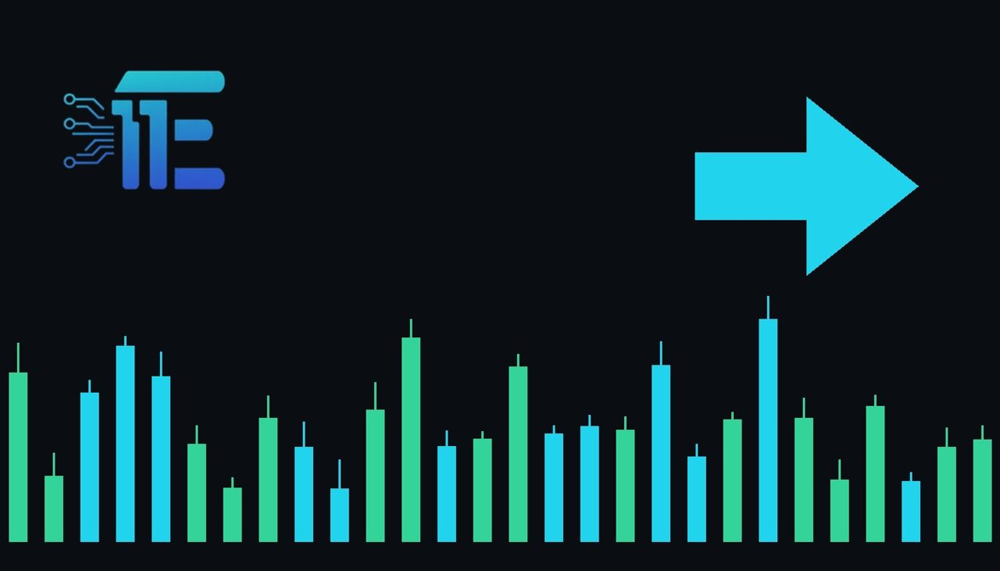

Gold Rebounds Above $3,900 as Weekly Losses Persistមាសស្ទុះងើបឡើងលើសតម្លៃ 3,900 ដុល្លារ ខណៈការធ្លាក់ចុះប្រចាំសប្តាហ៍នៅតែបន្ត
XAU/USD impact: ◆ Mixedផលប៉ះពាល់លើ XAU/USD: ◆ ចម្រុះ

Gold prices recovered past $3,900 an ounce following a 13-month low, though weekly declines remained. Higher Treasury yields, a stronger dollar, and expectations of Federal Reserve interest-rate increases continue to pressure bullion.
តម្លៃមាសបានស្ទុះងើបឡើងវិញលើស 3,900 ដុល្លារក្នុងមួយអោនបន្ទាប់ពីធ្លាក់ដល់កម្រិតទាបបំផុតក្នុងរយៈពេល 13 ខែ ប៉ុន្តែការខាតបង់ប្រចាំសប្តាហ៍នៅតែមាន។ ទិន្នផលប័ណ្ណបំណុលក្រសួងរតនាគារខ្ពស់ ដុល្លារអាមេរិកខ្លាំង និងការរំពឹងទុកអំពីការដំឡើងអត្រាការប្រាក់របស់ Fed បន្តដាក់សម្ពាធលើលោហៈមានតម្លៃនេះ។
Gold prices recovered above $3,900 an ounce on Friday, bouncing back from a 13-month low recorded in the previous session. Despite this late recovery, bullion remained under pressure and retained weekly losses as broad macroeconomic headwinds persisted.
តម្លៃមាសបានស្ទុះងើបឡើងវិញលើសតម្លៃ 3,900 ដុល្លារក្នុងមួយអោនកាលពីថ្ងៃសុក្រ ដោយបានងើបពីកម្រិតទាបបំផុតក្នុងរយៈពេល 13 ខែដែលបានកត់ត្រាក្នុងវគ្គជួញដូរមុន។ ក៏មាសនៅតែស្ថិតក្រោមសម្ពាធ និងរក្សាការខាតបង់ប្រចាំសប្តាហ៍ ដោយសារកត្តាប្រឈមម៉ាក្រូសេដ្ឋកិច្ចទូទៅនៅតែបន្តកើតមាន។
The primary transmission channel weighing on gold involves rising Treasury yields, a stronger US dollar, and growing expectations of further Federal Reserve interest-rate increases. A stronger greenback and elevated yields increase the opportunity cost of holding non-yielding bullion, limiting sustained upside momentum for precious metals.
ច្រកបញ្ជូនចម្បងដែលដាក់សម្ពាធលើមាសពាក់ព័ន្ធនឹងការកើនឡើងនៃទិន្នផលប័ណ្ណបំណុលរតនាគារ ដុល្លារអាមេរិកខ្លាំង និងការរំពឹងទុកកាន់តែខ្លាំងឡើងនៃការដំឡើងអត្រាការប្រាក់បន្ថែមទៀតពីធនាគារកណ្តាល Fed។ ប្រាក់ដុល្លារដែលខ្លាំងជាងមុន និងទិន្នផលខ្ពស់ធ្វើឱ្យការកាន់កាប់មាសដែលមិនផ្តល់ផលចំណេញមានការខាតបង់ឱកាសខ្ពស់ ដែលកំណត់សន្ទុះនៃការកើនឡើងយូរអង្វែងសម្រាប់លោហៈមានតម្លៃ។
Looking at a balanced market view, further hawkish signals regarding monetary policy, sustained strength in the US dollar, and rising bond yields would typically pressure gold prices lower. Conversely, renewed safe-haven demand or economic uncertainties could support the precious metal and encourage buyers to step in at lower levels.
ប្រសិនបើមើលលើទស្សនៈទីផ្សារដែលមានតុល្យភាព សញ្ញាឆ្ពោះទៅរកការរឹតបន្តឹងគោលនយោបាយរូបិយវត្ថុបន្ថែមទៀត ភាពរឹងមាំបន្តរបស់ដុល្លារអាមេរិក និងការកើនឡើងនៃទិន្នផលប័ណ្ណបំណុល ជាទូទៅនឹងដាក់សម្ពាធឱ្យតម្លៃមាសធ្លាក់ចុះ។ ផ្ទុយទៅវិញ តម្រូវការជម្រកមានសុវត្ថិភាពដែលកើតមានឡើងវិញ ឬភាពមិនច្បាស់លាស់ផ្នែកសេដ្ឋកិច្ចអាចគាំទ្រដល់លោហៈមានតម្លៃនេះ និងលើកទឹកចិត្តឱ្យអ្នកទិញចូលទីផ្សារនៅកម្រិតទាប។
Traders and market participants should closely monitor upcoming US macroeconomic data releases, Treasury yield movements, and statements from Federal Reserve officials for further direction on interest-rate expectations and currency strength.
អ្នកជួញដូរ និងអ្នកចូលរួមក្នុងទីផ្សារគួរតែតាមដានយ៉ាងដិតដល់នូវការចេញផ្សាយទិន្នផលម៉ាក្រូសេដ្ឋកិច្ចអាមេរិកនាពេលខាងមុខ ការផ្លាស់ប្តូរទិន្នផលប័ណ្ណបំណុលរតនាគារ និងសេចក្តីថ្លែងការណ៍ពីមន្ត្រីធនាគារកណ្តាល Fed សម្រាប់ទិសដៅបន្ថែមស្តីពីការរំពឹងទុកអត្រាការប្រាក់និងកម្លាំងរូបិយវត្ថុ។
Key takeawaysចំណុចសំខាន់ៗ
- Gold prices recovered above $3,900 an ounce after hitting a 13-month low.
- តម្លៃមាសបានស្ទុះងើបឡើងលើស 3,900 ដុល្លារបន្ទាប់ពីធ្លាក់ចុះដល់កម្រិតទាបបំផុតក្នុងរយៈពេល 13 ខែ។
- Rising Treasury yields, a stronger dollar, and Fed rate expectations weighed on bullion.
- ទិន្នផលប័ណ្ណបំណុលរតនាគារខ្ពស់ ដុល្លារអាមេរិក និងការរំពឹងទុកអត្រាការប្រាក់របស់ Fed បានដាក់សម្ពាធលើមាស។
- Traders are watching upcoming US economic data and Federal Reserve policy signals.
- អ្នកជួញដូរកំពុងតាមដានទិន្នផលសេដ្ឋកិច្ចអាមេរិក និងសញ្ញាគោលនយោបាយរបស់ធនាគារកណ្តាល Fed។
Original commentary by THE MARKET CODE, based on public reporting from Yahoo! Finance: GC=F News. Written with the help of AI. Educational only, not financial advice.
មតិវិភាគដើមដោយ THE MARKET CODE ផ្អែកលើការរាយការណ៍សាធារណៈពី Yahoo! Finance: GC=F News។ សរសេរដោយមានជំនួយពី AI។ មាតិកាអប់រំប៉ុណ្ណោះ មិនមែនជាដំបូន្មានហិរញ្ញវត្ថុទេ។